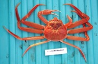

ズワイガニの漁獲量 都道府県ランキング
全11都道府県の順位と漁獲量
最終更新：
ズワイガニの漁獲量が全国で最も多いのは鳥取県で、564 tです。全国（2,387 t）の24%を占めます。

| 順位 | 都道府県 | 漁獲量 | 全国に占める割合 |
|---|---|---|---|
| 1位 | 鳥取県 | 564 t | 24% |
| 2位 | 兵庫県 | 545 t | 23% |
| 3位 | 福井県 | 466 t | 20% |
| 4位 | 石川県 | 356 t | 15% |
| 5位 | 新潟県 | 167 t | 7.0% |
| 6位 | 島根県 | 89 t | 3.7% |
| 7位 | 北海道 | 73 t | 3.1% |
| 8位 | 京都府 | 53 t | 2.2% |
| 9位 | 山形県 | 34 t | 1.4% |
| 10位 | 富山県 | 25 t | 1.0% |
| 11位 | 秋田県 | 16 t | 0.7% |
PR

ズワイガニの漁獲量の推移（令和2年〜令和6年）
全国の漁獲量は、令和2年の2,805 tから令和6年の2,387 tへ、15%減りました。1位は入れ替わっています（令和2年は兵庫県、令和3年は鳥取県）。
| 年 | 全国 | 1位 | 2位 | 3位 |
|---|---|---|---|---|
| 令和6年 | 2,387 t | 鳥取県564 t | 兵庫県545 t | 福井県466 t |
| 令和5年 | 2,392 t | 鳥取県533 t | 兵庫県524 t | 福井県450 t |
| 令和4年 | 2,674 t | 鳥取県560 t | 兵庫県518 t | 北海道485 t |
| 令和3年 | 2,544 t | 鳥取県626 t | 兵庫県588 t | 北海道364 t |
| 令和2年 | 2,805 t | 兵庫県787 t | 鳥取県774 t | 福井県320 t |
この数字について
- 分類：蟹の仲間
- 全国の漁獲量：2,387 t
- この数字が表すもの：漁獲量（海面漁業の漁獲量。養殖は含みません）
- 調査：海面漁業生産統計調査（海面漁業） 令和6年
- 11県分を調査（調査していない県は順位に入りません）
このページを引用するとき
出典：生産量.com「ズワイガニの漁獲量 都道府県ランキング」https://seisanryo.com/item/zuwaigani（元データ：海面漁業生産統計調査（海面漁業） 令和6年）
リンク・引用は連絡なしで自由に行えます。詳しくは引用・リンクについてをご覧ください。
ズワイガニの漁獲量について、よくある質問
- ズワイガニの漁獲量が日本一の都道府県はどこですか？
- 鳥取県です。海面漁業生産統計調査（海面漁業）（令和6年）で564 tでした。
- ズワイガニの漁獲量ランキング2位・3位はどこですか？
- 2位は兵庫県（545 t）、3位は福井県（466 t）です。
- ズワイガニの漁獲量ランキング4位・5位はどこですか？
- 4位は石川県（356 t）、5位は新潟県（167 t）です。ズワイガニの全11県の順位は上の表のとおりです。
- ズワイガニの全国の漁獲量はどれくらいですか？
- 2,387 t（令和6年）です。
広告